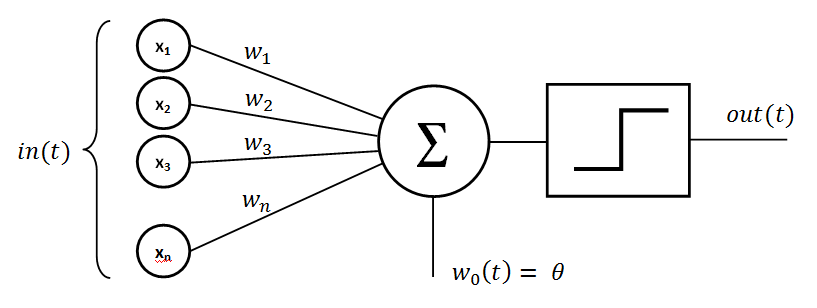
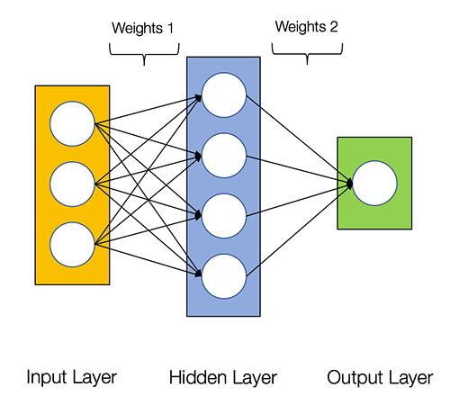
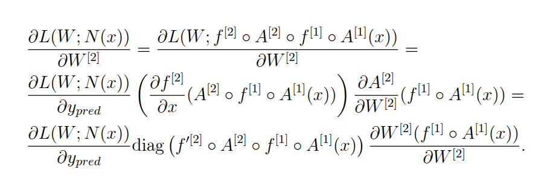
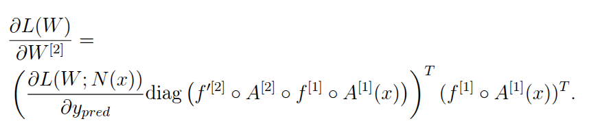
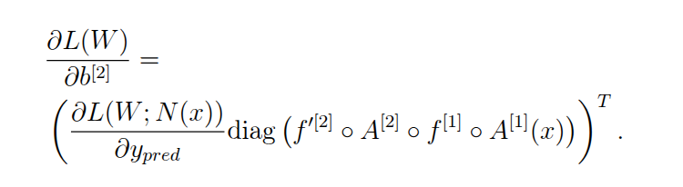
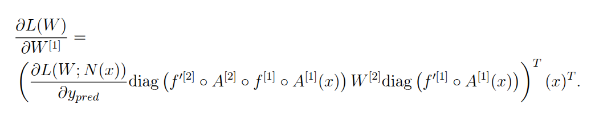
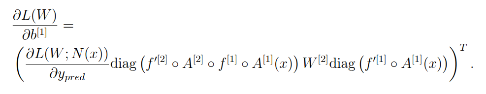

Chapter 4: Introduction to Feedforward Neural Networks
Introduction
In this chapter we introduce feedforward neural networks and backpropagation.
Perceptrons
Artificial neural networks are inspired by brains.
Brains are made up of neurons, artificial neural networks are made up of perceptrons.
Perceptrons
A perceptron \(p: \mathbb{R^n} \rightarrow \mathbb{R}\) is a function which takes the following form: \[
p(x; w, b) = f\left(\sum_{i=1}^n w_ix_i+b\right),
\] where \(w \in \mathbb{R^n}, b \in \mathbb{R}\) are parameters called weights and bias respectively and \(f: \mathbb{R} \rightarrow \mathbb{R}\) is any non-linear function called the activation function.
Perceptrons
Here is a visual representation of a perceptron:

For example, taking \[
f(x) = \frac{1}{1+e^{-x}}
\] we get a logistic regression model.
Perceptrons
There are many different choices for an activation function, see here.
By far the most popular nowadays is called Rectified Linear Unit or ReLU for short. It is defined as \[
f(x) = \begin{cases}
x, \text{ if } x > 0;\\
0, \text{ if } x \le 0.
\end{cases}
\]
Note that it is not differentiable at 0, however in practice this won’t cause any issues.
Perceptron
Here is the graph of ReLU:
Feedforward Neural Networks
By connecting several perceptrons together we get a (artificial) Neural Network (NN).
The simplest way to connect perceptrons is in a way that the resulting NN would not have any loops. Such a NN is called a Feedforward Neural Network.
Feedforward Neural Networks
In a feedforward NN perceptrons naturally form layers. Here is an illustration of a feedforward NN with 3 layers:

Feedforward Neural Networks
The leftmost layer is called the input layer, the rightmost - the output layer. Middle layers are called hidden layers.
If a NN has at least one hidden layer it is called deep.
Note that the input layer does not actually contain any perceptrons. The user of the NN uses the input layer to provide their inputs.
We are going to count layers from 0, so the input layer is layer 0.
Feedforward Neural Networks
We are going to require that all perceptrons in a given layer have the same activation function.
We will denote the activation function of the \(i\)-th layer by \(f^{[i]}.\)
Feedforward Neural Networks
Suppose layer \(i-1\) contains \(n\) perceptrons and layer \(i\) contains \(m\) perceptrons. Then the perceptrons in layer \(i\) are going to take \(n\) dimensional vectors as input.
If we collect all the weights of the \(i\)-th layer into the rows of a \(m\) by \(n\) matrix \(W\) and all the biases into an \(m\) dimensional column vector \(b\) then we can compute the output of the \(i\)-th layer compactly as follows: \[
f^{[i]}(Wx+b),
\] where it is understood that we apply \(f^{[i]}\) componentwise.
Feedforward Neural Networks
We are going to denote the weight matrix and bias vector of the \(i\)-th layer by \(W^{[i]}\) and \(b^{[i]}\) respectively.
We are also going to set \[
A^{[i]}(x) = W^{[i]}x+b^{[i]},
\] letter \(A\) stands for affine.
Feedforward Neural Networks
So in our notation the output of the \(i\)-th layer will be \[
f^{[i]}(W^{[i]}x+b^{[i]})=f^{[i]}(A^{[i]}(x))=f^{[i]} \circ A^{[i]}(x),
\] where \(\circ\) denotes function composition.
If we denote a feedforward NN with \(l\) layers by \(N\), then the output of it can be computed as \[
N(x) = f^{[l]} \circ A^{[l]} \circ f^{[l-1]} \circ A^{[l-1]} \circ \dots \circ f^{[1]} \circ A^{[1]}(x).
\]
Feedforward Neural Networks
Suppose we have a classification problem with \(n\) classes. Then usually the output of a feedforward NN is an \(n\) dimensional vector.
We would like the output vector to represent confidences of the classes, that is the components should be between 0 and 1 and sum to 1. This can be achieved by applying softmax to the output.
Feedforward Neural Networks
Softmax is a function from \(\mathbb{R}^n\) to \(\mathbb{R}^n\) whose \(i\)-th component of the output is defined to be \[
\text{softmax}_i(x) = \frac{e^{x_i}}{\sum_{j=1}^n e^{x_j}}.
\]
Backpropagation
We can apply feedforward NNs to classification and regression problems the same way we did logistic regression.
That is, we use a training dataset to define a loss function \(L\) that depends on NN’s weights. We then train the model by minimizing \(L\), using SGD for example.
In order to use SGD we need an efficient way to compute the partial derivatives of \(L\) with respect to weights and biases. This is done using an algorithm called backpropagation.
Backpropagation
The hardest part of backpropagation is not getting lost in notation.
To this end for a function \(f:\mathbb{R}^{m \times n} \rightarrow \mathbb{R}\) define \[
\frac{\partial f}{\partial W}(W) = \begin{pmatrix}
\frac{\partial f}{\partial w_{11}} & \dots & \frac{\partial f}{\partial w_{1n}} \\
\dots & \dots & \dots \\
\frac{\partial f}{\partial w_{m1}} & \dots & \frac{\partial f}{\partial w_{mn}}
\end{pmatrix}
\]
Backpropagation
Suppose \(y\) is an \(m\) dimensional row vector and \(x\) is an \(n\) dimensional column vector. It is easy to show that \[
y \frac{\partial}{\partial W}(Wx)=\frac{\partial}{\partial W}(yWx)=y^Tx^T.
\]
Backpropagation
Other useful derivative for us will be \[
\frac{\partial A(x)}{\partial x} = \frac{\partial}{\partial x}(Wx) + \frac{\partial b}{\partial x} = W + 0 = W,
\] where \[
\frac{\partial A(x)}{\partial x}
\] is the Jacobian of \(A\).
Backpropagation
If \(f\) is an activation function and \(x\) is an dimensional vector, then \[
\frac{f(x)}{\partial x} = \text{diag}(f'(x)),
\] where again \[
\frac{\partial f(x)}{\partial x}
\] is the Jacobian of \(f\) and \(\text{diag}(f'(x))\) is a diagonal \(n\) by \(n\) matrix with \(f'(x)\) on the diagonal.
Backpropagation
For concreteness, we will illustrate backpropagation by example. The general case is the same.
Let’s figure out the formulas for backpropagation to train a model with one hidden layer for a classification problem. Our model looks like this:
Backpropagation
So we have two affine functions \(A^{[1]}\) and \(A^{[2]}\) and two activation functions \(f^{[1]}\) and \(f^{[2]}.\) The first pair is for the hidden layer, the second pair is for the output layer.
We can compute the output of the model using \[
N(x) = f^{[2]} \circ A^{[2]} \circ f^{[1]} \circ A^{[1]}(x).
\]
To compute the confidences of the classes we can apply softmax to \(N(x),\) i.e. \[
\text{confidences}(x) = \text{softmax} \circ N(x).
\]
Backpropagation
We are going to use cross-entropy for loss. Also, in implementations, cross-entropy and softmax are usually combined because the derivatives are much nicer than computing the derivatives of cross-entropy and softmax separately.
Backpropagation
Suppose vectors \(\{y, x\} = \{y^i, x^i\}_{i=1}^{n}\) represent the training data. So the vectors \(y^i\) have 0 in all components except one where it has the value 1. Suppose the dimension of \(y^i\) is \(m\). Then our loss function will be \[
L(W; N(x)) = \frac{1}{n} \sum_{i=1}^{n} - \log \frac{\langle y^i, e^{N(x^i; W)} \rangle}{\sum_{j=1}^n e^{N(x^i; W)_j}}
\]
Backpropagation
Then the Jacobian of \(L(W; y_{pred})\) with respect to \(y_{pred}\) can be computed as \[
\frac{\partial L(W; y_{pred})}{\partial y_{pred}} = \frac{1}{n} \sum_{i=1}^n \text{softmax}(y_{pred}^i) - y^i,
\] where the Jacobian is a vector of same dimension as \(y^i\) and the sum is componentwise. We interpret this vector as a row vector (we need to do this for matrix multiplication to be defined properly in later formulas).
Backpropagation
In order to train our NN we need to compute \[
\frac{\partial L(W)}{\partial W^{[1]}}, \ \frac{\partial L(W)}{\partial b^{[1]}}, \ \frac{\partial L(W)}{\partial W^{[2]}}, \ \frac{\partial L(W)}{\partial b^{[2]}}.
\]
We can do this using the chain rule and formula \[
y \frac{\partial}{\partial W}(Wx)=y^Tx^T.
\]
Backpropagation
We compute

Backpropagation
Then

Backpropagation
Similarly

Backpropagation
Also

and

Backpropagation
So the full backpropagation algorithm consists of two steps:
Backward pass: Use the values from step one and derived formulas to compute the partial derivatives in terms of weights and biases.
Once you have the partial derivatives you can, for example, plug them into SGD to minimize the loss and train the model.
Practice task
Try to implement your own feedforward NN with one hidden layer for a classification task. Use the formulas we derived to perform backpropagation and SGD to minimize the loss function.
Make the hidden layer twice as big as the input layer. Use ReLU for the activation function of the first layer. Let the activation function of the output layer be the identity function, i.e. \(f^{[2]}(x)=x.\)
Practice task
Some notes:
In theoretical considerations it is convenient to consider \(x\) to be a column vector. However, in practical implementations it is more convenient to consider \(x\) to be a row vector.
Numpy arrays have matrix multiplication operator @.
Practice task
You can generate some mock data for testing your implementation using sklearn:
from sklearn.datasets import make_classificationfrom sklearn.preprocessing import OneHotEncoderX, y = make_classification(n_samples=10000, n_features=20, n_informative=10, n_classes=3, n_redundant=10, random_state=34)y = OneHotEncoder(sparse_output=False).fit_transform(y.reshape(-1, 1))print(f"X shape: {X.shape}, y shape: {y.shape}")